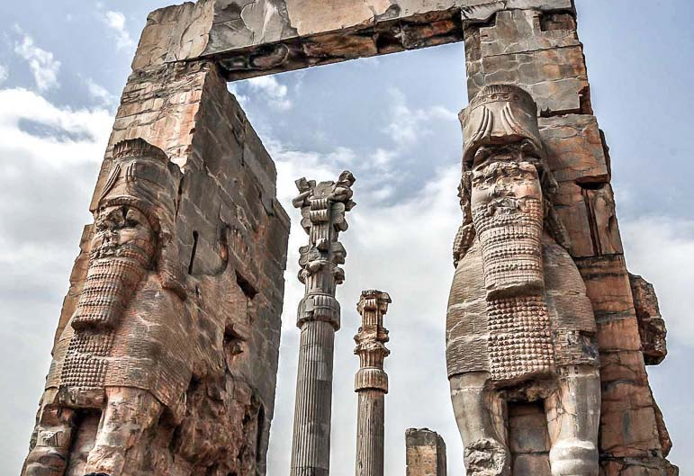

Achaemenid Architecture
Persepolis features grand staircases, tall columns, and detailed stone carvings that reflect the glory of the Achaemenid Empire. Its architectural design is a symbol of ancient Persian engineering and artistry.
Learn more on Wikipedia